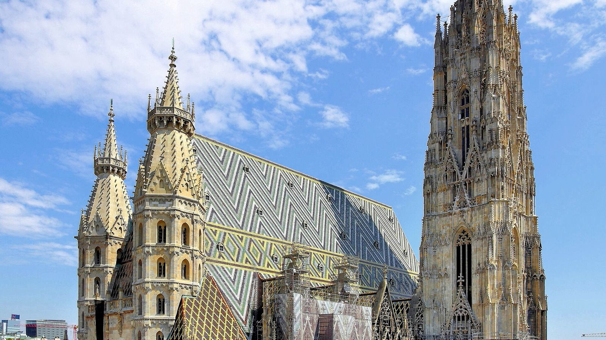

The captain who refused
In April 1945, German captain Gerhard Klinkicht was ordered to shell the cathedral with 100 rounds. He refused. A plaque inside thanks him for saving it, though a fire soon after still destroyed the roof.
Vienna's cathedral has been rising over the city since the 12th century. Its patterned roof has 230,000 tiles, and it almost didn't survive 1945. Here's what you're looking at, and what to listen for when you get there.

In April 1945, German captain Gerhard Klinkicht was ordered to shell the cathedral with 100 rounds. He refused. A plaque inside thanks him for saving it, though a fire soon after still destroyed the roof.
After the 1945 fire, every Austrian state paid for part of the rebuilding. The new roof's tiles form a double-headed eagle on the south side and the coats of arms of Vienna and Austria on the north.
The original Pummerin was cast in 1711 from cannons left by the Ottoman army after the siege of 1683. It shattered in the 1945 fire; the new one, recast from its remains, hangs in the north tower.
The south tower is about 136 meters tall; you can climb its 343 steps.
The first church here was consecrated in 1147; the Gothic cathedral was begun under Duke Rudolf IV in 1359.
Austria's largest bell, about 20 tonnes, in the north tower. It's rung only on special occasions, such as New Year.